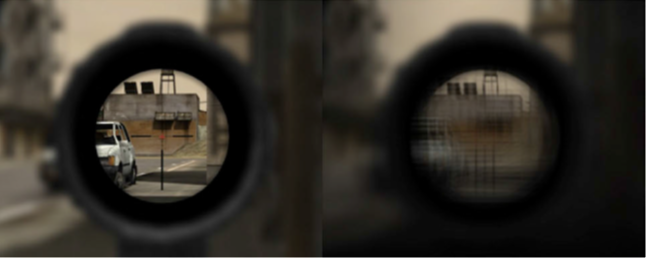
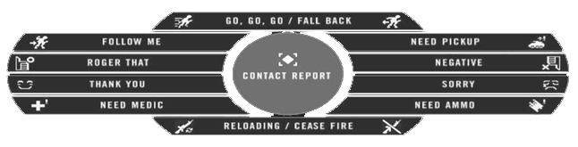
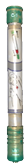
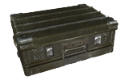
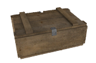
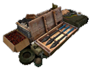
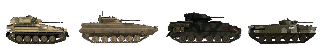
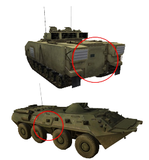

Dasar
Anda wajib untuk masuk kedalam Squad/Regu. Beberapa server malah dapat mengeluarkan beberapa pemain sendiri/solo (tidak masuk squad) setelah diberikan beberapa peringatan. Permainan ini akan lebih seru bila dimainkan bersama Squad yang terorganisir. Bila anda membutuhkan bantuan, Anda bisa menanyakan tugas dan peran anda kepada sesama pemain di dalam Squad. Jika memungkinkan gunakan Mumble, metode komunikasi yang sangat umum digunakan di PR. Bermain PR:BF2 tanpa mikrofon yang aktif, anda tidak dapat merasakan pengalaman yang sepenuhnya ketika bermain. Jadi, mempunyai mikrofon adalah sebuah alat yang berharga ketika bermain PR. Bila tidak ada yang menjawab/berbicara dalam sebuah squad, anda bisa masuk ke squad lain atau menggunakan General Chat. Ada banyak Anggota Komunitas PR:BF2 yang siap membantu Pemain baru. Kita mengharapkan anda untuk memiliki Pengetahuan Dasar mengenai Battlefield 2 Untuk menavigasikan Menu di dalam game, seperti Scoreboard, Map dan Memilih Kit/Peran. Anda juga bisa bermain Battlefield 2 dan melakukan beberapa latihan disana untuk membiasakan dengan tampilannya. Manual ini akan berfokus dalam perbedaan BF2 dan PR:BF2.
Seleksi Kit & spawn
- Ketika anda sudah mulai bermain, Direkomendasikan untuk spawn menjadi Rifleman pilihanmu. Dengan ini, anda dapat lebih tau tentang dasar-dasar gameplay PR:BF2.
- Setelah anda paham dengan Dasar bermain Infanteri, anda dapat bertanya kepada Squad Leader/Pemimpin Squad untuk memberikan anda sebuah Peran Spesialis bila anda ingin mengisi peran tersebut. Bila anda ingin mencoba Equipment/Peralatan atau Kendaraan yang baru anda kenal, Anda dapat melakukannya dengan mudah di mode coop tanpa membebani Squadmu atau Mempertaruhkan Asset Tim anda.
- Kits (Peran) yang lebih Spesialis dan lebih sulit untuk digunakan biasanya terbatas dan hanya bisa diambil dengan kondisi tertentu dalam Squad/Regu anda. Kit tersebut memiliki keterbatasan terhadap Tim dan anda harus selalu bertanya kepada Squad atau Tim anda ketika Request/Memintanya.
- Kits dapat di diminta/diambil dari Tampilan Spawn di menu (Seperti BF2), supply crate (Lihat Logistik)
Atau bagian belakang dari APC/IFV. Anda harus berada didalam squad untuk dapat mengambil Kit dari Supply crate atau Kendaraan.
Di PR:BF2 anda tidak dapat spawn di setiap control point yang Tim anda dapatkan. Spawn Points yang tersedia di BF2 tidak lain adalah :
- Rally Point Squad anda (RP) adalah sebuah lingkaran hijau yang mengitari Spawn Point dengan nomor squad anda di tengahnya. Posisi Rally Point Squad anda dan FOB Tim dapat menentukan waktu aktif dari Rally Point tersebut. Note : Bila anda spawn di Rally Point Squad lain, anda akan spawn di Rally Point anda sendiri atau FOB disekitarnya secara otomatis. Bila tidak ada sama sekali, anda akan spawn di Main Base/Markas Utama Tim anda. Bila diserang musuh, Rally Point Squad anda akan menghilang. Rally Point hanya tersedia untuk Pasukan Konvensional. (Lihat Pekerjaan Konstruksi)
Sebuah rallypoint.

- Map-specific team rally points. Biasanya akan menghilang dalam 5 menit setelah ronde dimulai dan bisa digunakan oleh seluruh tim.
- The commander rally point. Rally point ini hanya bisa ditaruh oleh komandan, dapat disediakan oleh beberapa pemimpin squad di area sekitar komandan. Di peta, rally point ini akan terdapat tuliskan “C” disampingnya.
- Deployable forward operating base (FOB) atau hideouts bisa digunakan oleh seluruh tim untuk spawn, tapi harus dibangun terlebih dahulu sebelum bisa beroperasi. Di peta akan bertanda sebagai spawn point dengan segitiga hijau. FOB akan beroperasi setelah 90 detik saat selesai dibangun. FOB tidak bisa digunakan selama 30 detik jika ada 1 musuh dalam 10m, 2 musuh dalam 50m, 4 musuh dalam 100 meter atau 8 musuh dalam 150m. (lihat Deployable Structures)
- Di mode permainan Insurgency, tim insurgent akan bisa spawn di tempat weapon caches yang belum diketahui oleh musuh, ini bisa disebut unknown cache. Tempat spawn ini juga akan tidak bisa digunakan ketika musuh dekat, sama seperti FOB.
FOB, Hideout & Weapon Cache.


- Headquarter tim anda, markas utama atau permanent FOB. Inilah salah satu tempat spawn yang selalu ada.
Armored Command Vehicle (ACV) hanya dapat ditemukan di markas.

- Beberapa peta terdapat fitur parachute spawn dimana mensimulasikan serangan lewat udara. Ini akan memvisualisasikan penanda spawn yang bergerak di minimap. Pilih salah satu dan anda akan spawn dengan parasut yang terbuka secara otomatis.
Tampilan Dalam Game (HUD)
- Dalam Tampilan in-game HUD PR:BF2, Pemain mendapatkan notifikasi dengan beberapa player-specific messages (Pesan Khusus Player) yang hanya bisa dilihat oleh player tersebut. Pesan tersebut digunakan untuk memberikan peringatan kepada player terkait dengan beberapa hal yang yang terjadi di game, contohnya :
- Alasan kenapa player tidak diberikan kit yang diminta
- Alasan kenapa Bangunan yang diminta untuk dibangun tidak bisa di buat
- Player harus keluar dari kendaraan atau mengganti tempat duduk di kendaraan untuk menghindari hukuman.
- PR juga menggunakan HQ notifications (Notifikasi Markas Pusat) yang di perlihatkan dengan tulisan besar berwarna oranye di di pojok kiri atas layar. Notifikasi tersebut dapat memberikan anda Informasi terbaru terkait dengan objektif saat ini, perkembangan misi dan pesan-pesan penting lainnya.
- Crosshairs telah sepenuhnya di hapus dari layar. Bila anda ingin menembak dengan akurat, anda harus menekan tombol alternatif menembak untuk membidik menggunakan bidikan senjata, atau menggunakan BUIS untuk pertempuran jarak dekat (Lihat bab senjata).
- Tanda Nama di atas player telah di hapus untuk semua player. Sangatlah penting untuk mengidentifikasikan Target anda sebelum menyerang untuk menghindari Friendly Fire (Menyerang teman). Belajar untuk mengetahui perbedaan infantry teman dan musuh dari kamuflase, bendera, senjata dan hal-hal lainnya untuk setiap Faksi sehingga anda dapat mengidentifikasikan musuh lebih cepat. Sebagai contoh, untuk mencari squad Leader, lihat radio yang antenanya memanjang ke atas dari tasnya.
- Tidak ada Health Bar yang menunjukan status vital anda. Ketika anda kehilangan 25% darah, anda akan mulai melihat berdarah merah di layarmu, yang akan terus-terusan muncul, diikuti oleh suara kesakitan dari karakter anda. Anda akan terus-menerus kehilangan darah sampai anda mendapatkan pertolongan pertama secara medis, bila tidak, maka anda akan mati. Bila darahmu tinggal sedikit, layar anda akan mulai kehilangan semua warna, penglihatanmu akan memudar dan anda akan berjalan dengan sangat lambat. Anda setidaknya memiliki beberapa menit untuk mendapatkan pertolongan secara medis atau anda akan mati.
- Tampilan Amunisi hanya memperlihatkan mode menembak dan jumlah magazines.
- Untuk mencari tahu Jumlah amunisi yang tersisa didalam magazine, anda bisa membuka Communication Rose (Tombol Q) dan melihat indikator visual dari jumlah amunisi yang tersisa di pojok kanan bawah.
- (Petugas) medis dapat melihat seberapa jauh dia mengobati seorang tentara dengan tampilan di pojok kanan bawah. Infanteri dapat melihat hal yang sama ketika sedang menggali deployable sampai selesai menggali
- Tidak ada Kill Messages (Kecuali Friendly Fire). Scoreboard juga tidak akan menampilkan siapa yang mati atau siapa yang mati di tim musuh. Bila anda ingin tau bila seseorang mati, anda harus melihat mayatnya.
- Hanya kendaraan yang dapat menggunakan mini-map permanent di HUD. Tetapi seluruh tampilan map tersedia bagi semua player.
- Map dan variasinya dapat di lihat di bagian layar atas ketika membuka peta.
- Dengan mengklik tanda panah di atas, anda dapat melihat Informasi asset map yang sedang dimainkan dari semua kendaraan yang ada di peta, termasuk waktu spawn kendaraan Tim anda.
Paparan info asset peta saat ini

- Tiket yang tersisa dari Tim anda dan waktu yang tersisa dari match hanya bisa dilihat dari squad Screen (CapsLock) Tiket musuh tidak akan di perlihatkan.
- Suppresi/Suppression terjadi ketika anda ditembak dengan senapan, Senjata berat atau ledakan dari dekat. Layar akan terlihat lebih gelap dan kabur, seperti efek terguncang. Efek ini mensimulasikan kapabilitas anda untuk menembak balik ketika sedang di berondong oleh tembakan musuh.

Penglihatan yang normal (kiri) dan efek supresi (kanan)
- Ketika Player Tewas, player tidak bisa dihidupkan kembali dan player tidak bisa melihat sekitaran mereka, Player hanya akan melihat layar hitam dengan tulisan “Dead”.
- Semakin banyak anda bergerak, semakin kecil akurasi senjatanya dan anda harus diam di tempat untuk mendapatkan akurasi yang maksimal. Untuk mencari tahu tentang seberapa akurat senjata yang ingin anda tembak, ada sebuah indikator tepat di atas kompas, semakin lebar indikatornya maka semakin tidak akurat senjata anda.
- Sistem spotting otomatis di map **telah dihapus dari unit darat. Tetapi kendaraan udara masih bisa dilacak.
- Officer dapat mengirim Laporan Kontak kepada komandan atau menggunakan radio untuk menempatkan tanda di map secara manual untuk dilihat oleh Tim. Infanteri Normal hanya bisa mengeluarkan suara lewat commorose (Q) ketika melihat musuh.
- Radio Commo-rose (default : Q dan T ) mempunyai dua fungsi. Klik Kiri "RELOADING/CEASE FIRE” dapat memberitahukan orang-orang di sekitar kalau anda sedang mengganti magasin senjata, Dan klik kanan akan mengasih tau orang disekitar untuk berhenti menembak. Prinsip yang sama juga berlaku untuk “GO,GO,GO/FALL BACK” dan menu lainnya di commo-rose.
- Anda dapat Melihat arah anda di dalam map dengan melihat panah arahan di sekitar icon anda di map.
- Dengan menggunakan senjata yang sejenis atau radio utama communication-rose akan diganti dengan menu lain. Ketika memegang field dressing atau medic bag anda dapat menggunakan perintah “FIRST AID” untuk memberitahu teman terdekat yang anda mau obati. Banyak peralatan dan beberapa senjata menggunakan konteks menu.

Commo-rose ketika menahan tombol Q
Sistem Darah
Senjata di Project Reality sangat berbahaya dan hanya masalah waktu saja dimana anda tertembak dan mulai berdarah. Meskipun PR tidak mempunyai tampilan yang berisi jumlah darah, akan ada suara kesakitan, batuk-batuk dan layar yang penuh darah ketika Darah anda turun dibawah 75%.
Perawatan / Pertolongan pertama/ medis
Bila luka anda tidak segera disembuhkan, anda akan mati secara perlahan. Anda punya dua cara pengobatan untuk mencegah hal ini. Hampir setiap kit mempunyai Field Dressing yang bisa diambil dengan menekan tombol atau memilihnya melalui weapon Selection. Menekan tombol menembak akan menjatuhkan Field Dressing ke tanah. Dalam beberapa detik, Field Dressing yang dijatuhkan akan menghilang dan Player yang berdiri di dekatnya akan mendapatkan pengobatan sebanyak 25% darah dari total darahnya.
Karena kebanyakan kit hanya mempunyai satu atau dua field dressings, cara yang lebih baik untuk menambah darah adalah dengan Medic. Medic dapat mengobati player dengan penuh menggunakan First Aid Kit dan medic juga dapat dipanggil ke posisi kalian menggunakan tombol “Q” dan memilih “Need Medic”. Medic dapat menggunakan First Aid Kit dengan menekan tombol nomor yang benar dengan slotnya, atau mencarinya dari weapon selection (menggunakan mouse wheel). Tetapi, tidak seperti bf2, medic tidak akan melemparkan first Aid kitnya ke tanah, tetapi medic harus men-equipnya, lalu mendekat ke posisi orang yang akan diobati lalu menekan mouse kiri. Akan ada suara perban yang sedang dipasangkan ketika sedang mengobati dengan aid kit. Butuh 15 detik untuk sepenuhnya mengobati orang yang sekarat, jadi pastikan anda tahu tempat yang aman untuk melakukan ini.

Field Dressing, first aid kit & epipen

Reviving
Bila anda tidak segera diobati, anda akan pingsan dan di layar anda akan tertulis kalau anda sedang terluka dengan parah critically wounded. Ini bukan berarti anda telah mati, ketika anda telah terluka parah, seorang medic masih bisa men-revive anda dalam 5 menit, dan dapat menghemat tiket berharga Tim anda. Anda dapat menggunakan mumble untuk memanggil dan mengkoordinasi medic untuk datang ke posisi anda dengan menggunakan Local Channel (H) atau Squad’s Radio (Numpad 0). Untuk bisa menghidupkan kembali,medic harus menggunakan Epipen dari pilihan senjata mereka dan dengan Epipen di tangannya, Suntik Epinephrine ke bagian badan player yang sedang pingsan dengan mengklik dan menahan mouse kiri. Player lalu akan hidup kembali tapi beda dengan BF2, Player yang baru dihidupkan kembali hanya mempunyai 10% darah dan masih harus diberikan pengobatan lebih lanjut. Medic dan Player yang baru dihidupkan kembali semestinya mencari tempat yang aman dan melanjutkan proses pengobatan di sana. Bila Player yang ingin dihidupkan terjebak, contohnya ketika berada di tempat yang tidak rata atau sedang berada di posisi yang buruk untuk di revive. Bila hal itu terjadi, para medic bisa menarik badan Player yang pingsan dan membawanya ke tempat yang lebih baik untuk di revive. Untuk menarik badan player sebagai medic, anda harus menunduk dekat badan player yang pingsan, lalu anda bisa menggunakan Drag di weapon slot untuk mulai menarik. Anda dapat menarik badan di segala arah, termasuk mundur.
Video Tutorial - Menghidupkan Kembali
Kematian
Ada beberapa hal yang membuat player tidak bisa dihidupkan Kembali, Seperti saat Player mati di dalam kendaraan. Atau ketika baru saja dihidupkan kembali lalu terluka kritis kembali dalam 2 menit, dengan itu, anda tidak akan bisa dihidupkan kembali untuk yang kedua kalinya. Bila anda terluka parah dan anda tidak dihidupkan kembali dalam 5 menit anda juga akan mati. Bila tidak ada kesempatan untuk menghidupkan kembali, klik kiri di Give up/Call Medic di Spawn Screen. Sekarang layarnya akan menunjukan kalau anda mati dan bisa bersiap-siap untuk respawn. Waktu yang anda gunakan untuk menunggu dihidupkan kembali akan dihitung ke waktu respawn anda bila mati.
Re-spawning
Waktu respawn player adalah sekitar 45 detik atau sekiranya 60 detik ditambah dengan penalty. Waktu yang dihabiskan untuk menunggu medik juga akan dikurangi dari waktu itu. Ketika player mati, dia harus menunggu sekiranya 5 detik sebelum spawning. Aksi berikut akan mempengaruhi waktu respawn :
- Player mati : +3 detik
- Mengambil Capture Point atau menghancurkan Objective :-3 detik
- Melakukan aksi defensive : -1 Detik
- Squad anda membuat Forward Outpost (FOB) : -10 Detik
Penalty Sementara yang hanya berefek ketika nanti anda mati ( Bisa sampai 5 menit ) itu dapat didapatkan dengan aksi berikut :
- Membunuh Teman/Tim Kill : 15 Detik setiap Team Kill
- Bunuh diri : 15 Detik
- Menjadi Civilian lalu tertangkap : 90 Detik
- Membunuh Civilian : 120 detik setiap Civilian
- Weapon chace teman hancur : 300 Detik
Untuk memilih tempat spawn, buka spawn map dan pilih tempat yang sesuai. Ketika anda sudah yakin untuk memilih tempat tersebut, anda harus mengklik tombol Done di pojok kanan bawah Map Screen untuk respawn kembali kedalam permainan. Dengan hanya menunggu Waktu respawn habis atau menekan Tombol Enter tidak akan membuatmu otomatis spawn. Bila anda melihat nomor yang sangat besar di respawn timer, seperti 5999 detik, itu artinya anda belum mengklik done.
Logistik
Dimana anda kehabisan amunisi dan perlu mengisi ulang, ingin kit baru atau hanya ingin membuat deployable emplacement, logistik merupakan teman terbaik anda.
Amunisi
Untuk bisa mengisi ulang perlengkapan dan amunisi, anda harus mendekat ke salah satu sumber amunisi, yang nanti akan mengisi ulang otomatis senjata dan peralatan anda. Sumber amunisinya antara lain:
- Ammo bags - Benda ini bisa ditemukan di dalam kit rifleman, militant, warrior dan kit insurgent yang lainnya dan harus dilemparkan (klik kiri) ke tanah, untuk anda,pasukan lainnya atau deployable dengan melemparkannya ke deployable yang bersangkutan.
- Ammo boxes - Dijatuhkan dari kendaraan lapis ringan, APCs dan IFVs.
- Light/Heavy supply crates - Informasi selanjutnya di sesi selanjutnya.
- Weapon caches - Hanya tersedia untuk insurgent
- Vehicle depot - Terdapat di semua markas utama, dan bisa menyembuhkan anda.

Ammunition bag, Pasukan Koalisi ammo crate, weapon cache, vehicle depot, & Pasukan Insurgent ammo crate.apon cache & Vehicle depot.

Anda harus paham kalau Semua amunisi itu terbatas, kecuali Weapon Caches dan Vehicle Depot. Supply tersebut akan hilang bila isinya habis. Ketahuilah bahwa sumber amunisi juga dapat habis sebelum anda sempat mengisi ulang.Ammo bags, ammo boxes dan supply crates menggunakan supply points untuk menentukan seberapa banyak barang tersebut dapat dipakai. Anda bisa mencari tahu berapa tersisa supply point yang terdapat di supply crates dan ammo boxes dengan melihatnya/menghadapnya beberapa detik. Tampilan tersebut akan muncul di samping kompas. Barang utilitas seperti grappling hook, tripflare, dan field dressing lebih murah untuk diisi ulang per penggunaan daripada persenjataan peledak seperti roket/rudal anti-tank, fragmentation grenade, dan mines. Lihat tabel di bawah ini untuk biaya pasokan dari kategori dan jenis senjata yang sesuai:
Firearms
| Type | Supply points cost |
|---|---|
| Pistols low capacity | 15 |
| Pistols high capacity | 30 |
| PDW | 30 |
| SMG | 45 |
| Shotgun primary | 50 |
| Shotgun breacher | 25 |
| Rifle | 60 |
| Sniper | 40 |
| LMG | 150 |
| GPMG | 200 |
Grenade Launcher
| Type | Supply points cost |
|---|---|
| Anti-Tank x1 | 70 |
| Anti-Tank x2 | 140 |
| Flare | 60 |
| Fragmentation low capacity | 80 |
| Fragmentation high capacity | 120 |
| Smoke | 60 |
Items & Utilities
| Type | Supply points cost |
|---|---|
| Ammo box | 200 |
| C4 low capacity | 45 |
| C4 high capacity | 75 |
| Tripflare | 20 |
| Grappling hook | 40 |
| Epipen | 60 |
| Field dressing x1 | 30 |
| Field dressing x3 | 75 |
| Field dressing x6 | 120 |
| Field dressing x12 | 180 |
Heavy ordnance & munitions
| Type | Supply points cost |
|---|---|
| Fragmentation grenade x1 | 60 |
| Fragmentation grenade x2 | 120 |
| Fragmentation grenade x4 | 240 |
| Smoke grenade low capacity | 40 |
| Smoke grenade high capacity | 60 |
| Signal smoke grenade | 30 |
| Anti-personel mine x2 | 140 |
| Anti-personel mine x3 | 210 |
| Conventional mine | 210 |
| Insurgent mine | 160 |
| Light IED | 60 |
| Heavy IED | 80 |
| Anti-air missile x1 | 100 |
| Anti-air missile x2 | 170 |
| Light anti-tank x1 | 70 |
| Light anti-tank x2 | 140 |
| Light anti-tank x3 | 210 |
| Light anti-tank x4 | 280 |
| Medium anti-tank x1 | 80 |
| Medium anti-tank x2 | 160 |
| Medium anti-tank x3 | 240 |
| Heavy anti-tank x1 | 90 |
| heavy anti-tank x2 | 180 |
| Guided anti tank | 120 |
Perhatikan bahwa pada server lokal, sistem isi ulang tidak akan berfungsi seperti yang dijelaskan. Setiap senjata akan membutuhkan 100 poin untuk diisi ulang terlepas dari jenis itemnya.
Mengisi ulang senjata apapun itu akan membutuhkan 100 supply points. Meminta kit membutuhkan 200 supply points. Mengisi ulang Ammo Bags di Ammo Box atau Light/Heavy Supply Create membutuhkan 200 supply point. Jumlah dari supply point untuk sumber supply yaitu:
- Ammo bags: 200 (akan terhitung hanya untuk 43 supply point ketika digunakan oleh aset deployable emplacement seperti contohnya TOW atau mortar)
- Ammo boxes: 450
- Light supply crates: 1500
- Heavy supply crates: 3000
Hal lainnya yang perlu diingat bahwa mengisi ulang itu tidak instan dan memerlukan beberapa detik, semua itu tergantung dari sumber amunisi yang dibutuhkan untuk mengisi ulang supply anda. Sebagai tambahan jika anda tidak mengisi ulang, anda harus konfirmasi bahwa light/heavy supply crates adalah milik tim anda, karena anda tidak bisa mengisi ulang dari supply crate musuh.
Supply Crates
Ada 2 macam tipe supply crates di PR:BF2 - Light Supply Crate dan Heavy Supply Crate. Dimana keduanya bisa dapat digunakan untuk mengisi ulang dan membuat deployable emplacement. Light crate sama dengan setengah dari Heavy Supply Crate, dalam artian anda butuh 2x light supply crates dimana hanya dibutuhkan 1x heavy supply crate. Untuk mempelajari lebih lanjut tentang deployable emplacement, (bisa dilihat di bab Bangunan.)
Disini ada bisa lihat heavy supply crate di kiri dan yang light di kanan.


Seperti mengisi ulang, meminta kit dari crates akan menghabisi supply crates. Setiap kit dibutuhkan 200 points, untuk light crates mempunyai 1500 (7x kits) dan yang heavy punya 3000 (14x kits).
Meminta kit dari crate yang tidak mempunyai cukup point masih bisa dapat mengambil kit nya tapi crate tersebut akan hancur seketika.
Light Supply Crate dapat di antarkan dari:
- Light Helicopter seperti Huey, Lynx dan Zhi-9b (One Crate)
- Transport truck (One crate)
Sementar, Heavy Supply Crate bisa diantarkan dari:
- Medium Helicopter seperti Black Hawk, Mi-17 dan NH-90 (One Crate)
- Heavy Helicopter seperti Chinook, Zhi-8KA dan MV-22 (Two Crates)
- Logistic Truck: (Two Crates)
Pemilik dari crate tersebut tergambarkan bendera yang terpampang di atas bagian crate.
Repair Drop
Logistic truck juga memiliki kemampuan untuk menaruh repair station. Barang tersebut diperlukan untuk perbaikan di lapangan untuk kendaraan yang sedang rusak parah dan tidak bisa bergerak.
Repair drop.

Score
Skor pemain terbagi dari point kerjasama dan poin individu. Terbilang bahwa melakukan aktivitas kerjasama tim (membangun, mengendarai kendaraan, menjaga/menyerang CP) kontribusi utama dan tindakan individu (membunuh pemain) kontribusi ke skor pribadi.
Dari keseluruhan skor pemain tidak pernah bisa mencapai dibawah 0 tapi skor kerjasama tim bisa mencapai negatif. Ada juga skor yang berkali lipat ketika anda di kendaraan atau menjadi pemimpin squad. Berikut beberapa skor tambahan dan pengurangan. Ini tidak seberapa tapi bisa memberi anda ide bagus apa yang harus diperoleh.
- Menangkap warga sipil: +100
- Membunuh warga sipil: -100
- Menghancurkan objektif diri sendiri: -100
- Menghancurkan objektif musuh: +150
Mortar
Mortar yang telah dibuat dapat memberikan bantuan dengan tembakan secara tidak langsung dari jarak jauh. Semua faksi bisa menembakan peluru high-explosive. Pasukan konvensional dan militia bisa juga menggunakan peluru airburst dan smoke. Mortar tidak bisa dibuat di peta berukuran dibawah dari 2km.
- High Explosive (HE) (tombol “1”): Tipe peluru mortar yang paling umum. Dapat memberikan kerusakan secara langsung ke target. Sangat bagus untuk light armored dan emplacements
- Airburst(tombol “2”): Meledak di udara dekat tanah. Mencakup daerah yang luas tetapi memberikan kerusakan yang rendah. Sangat bagus untuk menyerang infanteri di dalam bangunan atau medan yang tidak rata.
Ketika mortar sedang dibutuhkan anda bisa menggunakan kalkulator yang terdapat di mortir (tombol “3”). Jarak ke target dan perbedaan ketinggian bisa dimasukan kedalam kalkulator dengan mengklik nomor di bagian “Range” dan “Height”. Untuk mendapat jaraknya pastikan marker pemimpin squad berada di target, lalu buka peta dan anda akan menemukan jarak yang tertulis di bawah peta. Ketika anda selesai tinggal klik tombol “Calculate” untuk menampilkan ketinggian barel yang dibutuhkan. Ketinggian bisa diatur dengan tombol W dan S sedangkan untuk menggeser gunakan tombol A dan D. Ketika kedua angka sudah ditentukan, tinggal pilih kebutuhan tipe peluru dan tembak. Peluru Air-burst dan Impact menggunakan amunisi yang sama.
Tampilan calculator mortar

Close Support Bridges (CSB)
Dibutuhkan untuk menyeberang sungai kecil atau jembatan yang rusak, pasukan konvensional bisa menaruh CSB menggunakan logistik truk yang membawa 2 jembatan. Di Project Reality CSB hanya bisa digunakan untuk menutupi kerusakan jembatan yang hancur dan ada lokasi yang sudah ditentukan dimana ada gundukan tanah berukuran kecil.
CSB sangat sempit, jadi hati-hati saat melintasinya dengan kendaraan.
Untuk proses penaruhannya untuk CSB sangat simpel: 1. Kendarai truk logistik ke posisi dimana CSB akan di taruh. 2. Posisikan bagian depan atau belakang truk sedekat mungkin ke tempat yang mau ditaruh. 3. Pilih CSB sebagai peralatan truk yang digunakan. 4. Lalu klik kanan untuk menaruh jembatannya.
Video Tutorial - CSB Deployment
CSB yang dikeluarkan dari truk.

Dalam beberapa kasus diperlukan lebih dari satu CSB untuk menjangkau jarak yang lebih jauh. Dalam situasi seperti ini, anda perlu mengemudi ke ujung jembatan yang belum selesai dan menaruh jembatan yang baru dan ulangi langkah tersebut sampai selesai.
Navigasi Area Bertempur
Sangatlah mudah untuk tersesat di peta yang besar di PR:BF2. Bergerak (secara) perlahan dan mengkoordinasikan tim juga membutuhkan pemain untuk berkomunikasi tentang lokasi dengan jelas dan ringkas. PR:BF2 menawarkan 4 alat untuk membantu pemain dengan ini.
- Pemimpin squad bisa menggunakan squad order marker untuk mengomunikasikan lokasi kepada squad sendiri dan juga komandan. Arahan penanda terdapat diatas kompas. Jika anda berada dalam jarak 75m dari penanda, anda juga akan melihat ikon 3D yang menunjukan lokasi di depan anda. Penanda juga akan terlihat di peta.e map.
 Target
Target Build
Build Observe
Observe Defend
Defend Demolish
Demolish- Move
-
Derajat kompas yang tepat di bawah tengah layar anda. Kompas bisa digunakan untuk memberikan arah yang tepat kepada musuh yang terdeteksi. 8 Arah mata angin yang berbeda dan derajatnya tertera dengan jelas yang akan bertambah setiap 15 derajat dengan 5 darajat setiap divisi utama. Jika anda hanya ingin mengkomunikasikan arah, praktik terbaiknya adalah dengan mengatakan arah mata angin, diikuti dengan derajat dan jarak jika sesuai. Contohnya "Musuh terdeteksi NE 75° 200 meter”.:
-
Jika target secara visual sejajar dengan poros di kompas anda ketika anda menghadap arah tersebut, anda cukup berkomunikasi nomor itu.
-
Ingatlah bahwa semua garis kompas panjangnya sama dengan 5°. Jika target sejajar di arah 75° dengan garis di sebelah kanan garis berlabel, tinggal tambahkan 5° .Jadi targetnya berada di arah 80°
-
Peta PR:BF2 memiliki label referensi grid dan subgrid keypad. Labelnya bisa ditemukan di perbatasan atas dan kiri peta. Petanya sendiri dibagi menjadi 169 kotak grid dimulai dari 1 di pojok atas kiri dan diakhiri dengan M13 di pojok kanan bawah. Setiap kotak grid dibagi menjadi 9 subgrid. Subgrid ditandai dari 1 sampai 9 sama seperti posisi keypad keyboard anda. Untuk lokasi yang tidak tepat, anda hanya perlu menyebutkan bidang grid utama (contoh: D6). Untuk lokasi yang lebih tepat, anda bisa menambahkan lokasi grid beserta sub gridnya (contoh: DG-2). Petunjuk grid sering digunakan untuk berkomunikasi lokasi diantara squad. Ketika menggunakan mumble, huruf pertama petunjuk grid seringnya diucapkan menggunakan Alfabet Fonetik Nato. Kata sandinya yaitu :
Alpha, Bravo, Charlie, Delta, Echo, Foxtrot, Golf, Hotel, India, Juliett, Kilo, Lima, Mike, November, Oscar, Papa, Quebec, Romeo, Sierra, Tango, Uniform, Victor, Whiskey, X-ray, Yankee dan Zulu 4. Skala setiap kotak map grid ditampilkan di pojok kanan bawah. Skala pada peta 1km ditandai dengan 75m map grid, 2km ditandai dengan 150m, dan 4km ditandai dengan 300m. Anda bisa memperkirakan jarak di peta secara mudah menggunakan kotak grid. Layar Squad Leader juga menampilkan prakiraan jarak ke penanda squad anda saat ini di bawah peta.

Informasi Dasar Kendaraan
Banyak kendaraan bersifat sangat berbeda dibandingkan dengan BF2 dan membutuhkan pengetahuan lebih banyak untuk mengoperasikannya. Karena kendaraan ini juga memiliki respawn waktu yang sangat lama (hingga 20 menit) sangatlah penting untuk tahu bagaimana caranya untuk menghindar dari masalah. Bagian ini fokus untuk menjelaskan jenis kendaraan dan bagaimana kendaraan ini berpengaruh bagi tim. Untuk lebih detail dalam mengoperasikan kendaraan ini, baca lebih dalam di manual ini di sesi tentang Mengoperasikan Kendaraan.
Ada banyak jenis kendaraan di PR:BF2 digunakan sebagai klasifikasi. Ini tidak selalu sama seperti di kehidupan nyata dikarenakan untuk gameplay nya. Berikut daftar utama kendaraan di PR:BF2:
- Jeep: Kendaraan angkut berkapasitas kecil yang tidak selalu memuat seluruh squad. Bisa juga menaruh ammo crates berukuran kecil. Terkadang juga dilengkapi oleh machine gun.

- Civilian vehicles: Pasukan insurgent di PR:BF2 bisa memiliki mobil sipil dan technicals dipersenjatai machine guns, rocket-pods, dan SPG-9 recoilless rifles. Mereka juga punya truk yang dipasang AA-gun dan bom truk dalam persenjataan mereka.

- Truck: Tersedia dalam bentuk transport dan varian logistik. Tipe transport dapat menaruh 1 light supply crate dan bisa memuat semua squad. Tipe logistik hanya bisa muat 2 pasukan dan bisa menaruh 2 heavy supply crates, repair stations dan Close Support Bridge (penjelasan lebih lanjut setelah ini).

- Armored Personnel Carrier (APC): Kendaraan lapis baja berkapasitas besar yang lebih sering dipersenjatai dengan persenjataan berat. Tidak mempunyai kekuatan untuk mengalahkan target lapis baja berat lainnya seperti IFV dan tank, tapi kemampuan terbaiknya dari tipe kendaraan tersebut adalah membantu pasukan infanteri. Bisa memuat 2 krew kendaraan (pengemudi dan penembak) dan 6 penumpang pasukan.

- Infantry Fighting Vehicle (IFV): Mempunyai perlengkapan senjata yang lebih baik dan lebih kuat dari pada APC lainnya dengan mempunyai kemampuan untuk menghancurkan target lapis baja lainnya menggunakan Misil Anti Tank. IFV tidak selalu bisa membawa penumpang pasukan. Kategori ini juga bisa termasuk dalam kendaraan pengintaia.

- Anti-Tank Missile Mounted Vehicle (ATM): Dengan namanya sendiri. Kendaraan ini dilengkapi dengan senjata misil Anti-Tank untuk menghancur kendaraan lapis baja lainnya. Tidak bisa membawa penumpang.

- Tank: Kendaraan lapis baja terkuat. Mereka diperlengkapi dengan AP (Armor Piercing), HE (High Explosive) dan COAX (Machinegun).

- Anti-Air Vehicle: Ini biasanya merupakan kendaraan lapis baja ringan hanya memiliki kemampuan untuk menjatuhkan pesawat dan helikopter musuh. Mereka bisa menggunakan misil atau/dan senjata kaliber besar.

- Boat: PR:BF2 mempunyai berbagai perahu, ada yang bersenjata maupun tidak.

- Transport Helicopter: Helikopter ini biasanya diperlengkapi dengan door-guns yang digunakan oleh penumpang pasukan. Mereka juga bisa dapat menaruh heavy supply crates. Ada beberapa macam seperti light, medium, dan heavy transport choppers. Lihat dibagian Supply Crates untuk membaca beragam crates yang tersedia.

- Attack Helicopters: Helikopter ini diperlengkapi machine-gun pods dan beragam roket dan misil. Ada beberapa macam seperti light, medium, dan heavy. Helikopter pengintai juga mempunyai kemampuan untuk membidik target dengan laser dan menggunakan kamera thermal juga termasuk di kategori PR:BF2 ini. Dan mereka tidak selalu dipersenjatai.

- Jets: PR:BF2 punya banyak beragam jet. Ada beberapa macam seperti light dan heavy attack jet, fighter jet, bombers, dan fighter-bombers.

Semua kendaraan teman tertanda di peta dengan ikon unik yang mudah untuk diidentifikasi.

- Jika aset kendaraan tim hancur akan ada penalti tiket:
- Jeep atau truck: 2 tickets
- Transport helicopter: 5 tickets
- APC/AAV/RECON: 5 tickets
- Tank or IFV: 10 tickets
- Jet or attack helicopter: 10 tickets
- Kendaraan milik musuh Tidak bisa dipakai.
- Kendaraan hanya bisa masuk melalui posisi yang ditentukan di badan kendaraanya.

Titik masuk kendaraan bisa berbeda setiap kendaraan. Carilah palka kendaraan untuk masuk.
- Pasukan standar bisa mengendarai kendaraan kecil yang tidak berlapis baja seperti jeep, truk, dan kapal tanpa perlu membutuhkan kit khusus. Jika anda tidak menggunakan crewman atau pilot kit untuk mengoperasikan kendaraan atau menggunakan crewman/pilot dan menggunakan posisi penumpang, anda akan menerima pesan peringatan saat memasukinya dan layar akan perlahan lahan akan menjadi gelap. Jika anda tidak keluar dari kendaraan dengan segera, anda akan mati.
- Ketika keluar dari kendaraan yang bergerak atau terbakar, anda akan terluka dan akan mati. Semakin cepat kendaraan bergerak, semakin besar peluang kematiannya.
- Menghancurkan bangkai kendaraan tidak mempengaruhi skor, meskipun pesan peringatan akan muncul ketika menghancurkan bangkai kendaraan teman.
- Semua Senjata kendaraan atau statis butuh waktu sebelum bisa ditembakan, sebagai berikut :
- MG: 5 detik
- Misil Anti Udara: 5 detik
- Anti Tank statis: 10 detik
- Meriam utama lapis baja: 30 detik
- Sebagian besar senjata Anti-Tank mempunyai optik dengan kemampuan zoom. Beberapa dari mereka bahkan mempunyai optik penglihatan thermal
- Keluar dari kendaraan di tengah udara dan jatuh ke air dari ketinggian akan melukai anda dan bisa menyebabkan anda mati
- Pemain bisa meminta kit dari APC/IFV dari posisi masuk kendaraan.
- Kendaraan lapis baja lebih rentan diserang dari sisi samping/belakang. Posisi pada samping/belakang merupakan bagian yang terlemah. Satu proyektil anti-tank dapat melumpuhkan sasaran bahkan meledakkannya.
- Di server publik (bukan di gamemode lokal) Anda dapat dengan cepat beralih ke kursi kosong berikutnya yang tersedia di dalam kendaraan dengan menekan F8.
- Ketika di dalam kendaraan, Anda dapat melihat informasi tentang kursi yang ditempati di kiri bawah HUD. Ini hanya menunjukkan kursi kru penting diberi penanda. Ini termasuk posisi pengemudi dan penembak. Kursi penumpang tidak memiliki penanda seperti itu dan ditampilkan sebagai penghitung terpisah.
Kursi kru penting diberi penanda. Penumpang diberi tanda penghitung (counter)